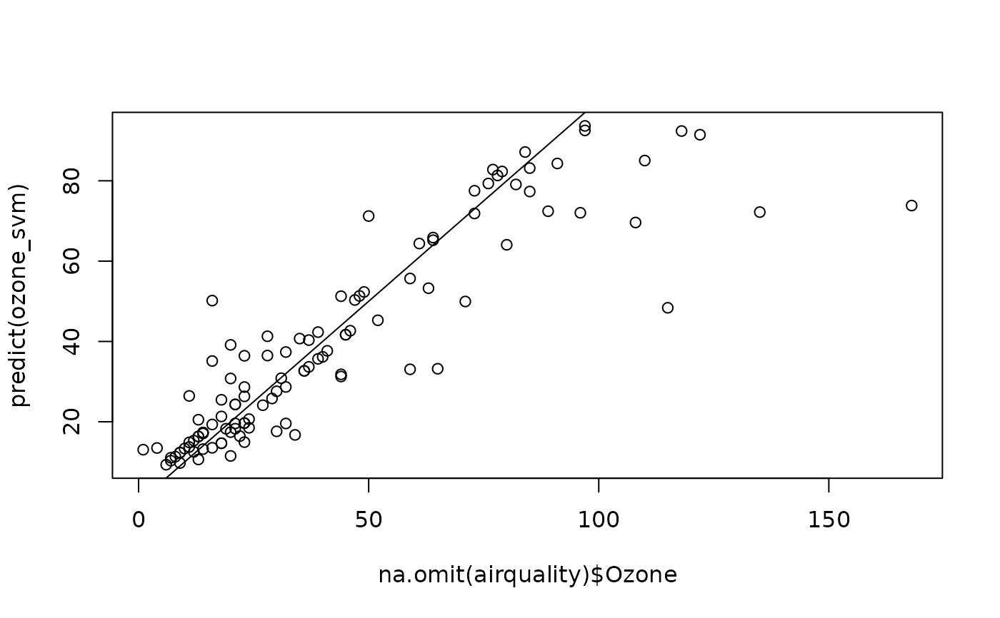

Unified (formula-based) interface version of the support vector machine
algorithm provided by e1071::svm().
mlSvm(train, ...)
ml_svm(train, ...)
# S3 method for class 'formula'
mlSvm(
formula,
data,
scale = TRUE,
type = NULL,
kernel = "radial",
classwt = NULL,
...,
subset,
na.action
)
# Default S3 method
mlSvm(
train,
response,
scale = TRUE,
type = NULL,
kernel = "radial",
classwt = NULL,
...
)
# S3 method for class 'mlSvm'
predict(
object,
newdata,
type = c("class", "membership", "both"),
method = c("direct", "cv"),
na.action = na.exclude,
...
)a matrix or data frame with predictors.
further arguments passed to the classification or regression
method. See e1071::svm().
a formula with left term being the factor variable to predict
(for supervised classification), a vector of numbers (for regression) or
nothing (for unsupervised classification) and the right term with the list
of independent, predictive variables, separated with a plus sign. If the
data frame provided contains only the dependent and independent variables,
one can use the class ~ . short version (that one is strongly encouraged).
Variables with minus sign are eliminated. Calculations on variables are
possible according to usual formula convention (possibly protected by using
I()).
a data.frame to use as a training set.
are the variables scaled (so that mean = 0 and standard
deviation = 1)? TRUE by default. If a vector is provided, it is applied
to variables with recycling.
For ml_svm()/mlSvm(), the type of classification or
regression machine to use. The default value of NULL uses
"C-classification" if response variable is factor and eps-regression
if it is numeric. It can also be "nu-classification" or
"nu-regression". The "C" and "nu" versions are basically the same but
with a different parameterisation. The range of C is from zero to infinity,
while the range for nu is from zero to one. A fifth option is
"one_classification" that is specific to novelty detection (find the
items that are different from the rest).
For predict(), the type of prediction to return. "class" by default,
the predicted classes. Other options are "membership" the membership
(number between 0 and 1) to the different classes, or "both" to return
classes and memberships.
the kernel used by svm, see e1071::svm() for further
explanations. Can be "radial", "linear", "polynomial" or "sigmoid".
priors of the classes. Need not add up to one.
index vector with the cases to define the training set in use (this argument must be named, if provided).
function to specify the action to be taken if NAs are
found. For ml_svm() na.fail is used by default. The calculation is
stopped if there is any NA in the data. Another option is na.omit,
where cases with missing values on any required variable are dropped (this
argument must be named, if provided). For the predict() method, the
default, and most suitable option, is na.exclude. In that case, rows with
NAs in newdata= are excluded from prediction, but reinjected in the
final results so that the number of items is still the same (and in the
same order as newdata=).
a vector of factor (classification) or numeric (regression).
an mlSvm object
a new dataset with same conformation as the training set (same variables, except may by the class for classification or dependent variable for regression). Usually a test set, or a new dataset to be predicted.
"direct" (default) or "cv". "direct" predicts new cases in
newdata= if this argument is provided, or the cases in the training set
if not. Take care that not providing newdata= means that you just
calculate the self-consistency of the classifier but cannot use the
metrics derived from these results for the assessment of its performances.
Either use a different data set in newdata= or use the alternate
cross-validation ("cv") technique. If you specify method = "cv" then
cvpredict() is used and you cannot provide newdata= in that case.
ml_svm()/mlSvm() creates an mlSvm, mlearning object
containing the classifier and a lot of additional metadata used by the
functions and methods you can apply to it like predict() or
cvpredict(). In case you want to program new functions or extract
specific components, inspect the "unclassed" object using unclass().
mlearning(), cvpredict(), confusion(), also e1071::svm()
that actually does the calculation.
# Prepare data: split into training set (2/3) and test set (1/3)
data("iris", package = "datasets")
train <- c(1:34, 51:83, 101:133)
iris_train <- iris[train, ]
iris_test <- iris[-train, ]
# One case with missing data in train set, and another case in test set
iris_train[1, 1] <- NA
iris_test[25, 2] <- NA
iris_svm <- ml_svm(data = iris_train, Species ~ .)
summary(iris_svm)
#> A mlearning object of class mlSvm (support vector machine):
#> Initial call: mlSvm.formula(formula = Species ~ ., data = iris_train)
#>
#> Call:
#> svm.default(x = sapply(train, as.numeric), y = response, scale = scale,
#> type = type, kernel = kernel, class.weights = classwt, probability = TRUE,
#> .args. = ..1)
#>
#>
#> Parameters:
#> SVM-Type: C-classification
#> SVM-Kernel: radial
#> cost: 1
#>
#> Number of Support Vectors: 42
#>
#> ( 8 17 17 )
#>
#>
#> Number of Classes: 3
#>
#> Levels:
#> setosa versicolor virginica
#>
#>
#>
predict(iris_svm) # Default type is class
#> [1] setosa setosa setosa setosa setosa setosa
#> [7] setosa setosa setosa setosa setosa setosa
#> [13] setosa setosa setosa setosa setosa setosa
#> [19] setosa setosa setosa setosa setosa setosa
#> [25] setosa setosa setosa setosa setosa setosa
#> [31] setosa setosa setosa versicolor versicolor versicolor
#> [37] versicolor versicolor versicolor versicolor versicolor versicolor
#> [43] versicolor versicolor versicolor versicolor versicolor versicolor
#> [49] versicolor versicolor versicolor versicolor versicolor versicolor
#> [55] versicolor versicolor versicolor versicolor versicolor versicolor
#> [61] virginica versicolor versicolor versicolor versicolor versicolor
#> [67] virginica virginica virginica virginica virginica virginica
#> [73] virginica virginica virginica virginica virginica virginica
#> [79] virginica virginica virginica virginica virginica virginica
#> [85] virginica versicolor virginica virginica virginica virginica
#> [91] virginica virginica virginica virginica virginica virginica
#> [97] virginica virginica virginica
#> Levels: setosa versicolor virginica
predict(iris_svm, type = "membership")
#> setosa versicolor virginica
#> 1 0.951435407 0.032495056 0.016069537
#> 2 0.967421887 0.018725299 0.013852813
#> 3 0.961369888 0.023695552 0.014934560
#> 4 0.961970702 0.021769233 0.016260065
#> 5 0.951444898 0.030272876 0.018282226
#> 6 0.961648171 0.021735205 0.016616624
#> 7 0.966566032 0.019683307 0.013750661
#> 8 0.939087335 0.039362615 0.021550049
#> 9 0.961482968 0.023862047 0.014654986
#> 10 0.956167098 0.026513386 0.017319516
#> 11 0.966243128 0.019207398 0.014549474
#> 12 0.956682437 0.027285520 0.016032043
#> 13 0.949678444 0.028610096 0.021711460
#> 14 0.936701836 0.037460383 0.025837782
#> 15 0.929482341 0.038350057 0.032167602
#> 16 0.951630696 0.029577288 0.018792016
#> 17 0.964122957 0.021587898 0.014289145
#> 18 0.940388161 0.039470315 0.020141524
#> 19 0.955065763 0.026427755 0.018506481
#> 20 0.949883784 0.033146769 0.016969446
#> 21 0.958244061 0.025083289 0.016672649
#> 22 0.949643233 0.025470079 0.024886688
#> 23 0.943275976 0.040379217 0.016344806
#> 24 0.961890201 0.022648916 0.015460883
#> 25 0.942359242 0.040362196 0.017278562
#> 26 0.960129872 0.025719736 0.014150392
#> 27 0.962750449 0.022429270 0.014820281
#> 28 0.963158541 0.022357989 0.014483471
#> 29 0.964684283 0.021355352 0.013960365
#> 30 0.959431859 0.026279122 0.014289019
#> 31 0.945363652 0.037748931 0.016887418
#> 32 0.938688170 0.033084142 0.028227688
#> 33 0.941674653 0.032351094 0.025974253
#> 34 0.020376949 0.913159905 0.066463145
#> 35 0.016536573 0.952512821 0.030950606
#> 36 0.017384687 0.803813058 0.178802255
#> 37 0.009192886 0.949429297 0.041377817
#> 38 0.010744284 0.890012560 0.099243156
#> 39 0.010380721 0.968421867 0.021197411
#> 40 0.020808643 0.894479956 0.084711401
#> 41 0.029144442 0.948715979 0.022139579
#> 42 0.012447147 0.970086031 0.017466823
#> 43 0.014298827 0.944050100 0.041651073
#> 44 0.023668094 0.933642795 0.042689112
#> 45 0.013225677 0.964647389 0.022126934
#> 46 0.017936267 0.970331588 0.011732145
#> 47 0.009962070 0.948737516 0.041300414
#> 48 0.022407953 0.970649080 0.006942967
#> 49 0.015266274 0.966054220 0.018679506
#> 50 0.015651888 0.927584040 0.056764072
#> 51 0.014710478 0.981602344 0.003687177
#> 52 0.019437934 0.767576123 0.212985944
#> 53 0.010710351 0.982324234 0.006965415
#> 54 0.022780858 0.580459144 0.396759999
#> 55 0.010590610 0.984022822 0.005386567
#> 56 0.013381974 0.644810681 0.341807344
#> 57 0.010493135 0.977234695 0.012272170
#> 58 0.011473693 0.981079180 0.007447127
#> 59 0.012801209 0.969056993 0.018141799
#> 60 0.014461560 0.892688425 0.092850014
#> 61 0.015467733 0.372974844 0.611557423
#> 62 0.009839872 0.932139472 0.058020656
#> 63 0.018704013 0.976862735 0.004433251
#> 64 0.010826439 0.979389110 0.009784451
#> 65 0.013283440 0.979717978 0.006998581
#> 66 0.011174678 0.984087777 0.004737544
#> 67 0.018934576 0.005128582 0.975936842
#> 68 0.010241168 0.033166442 0.956592390
#> 69 0.010293102 0.004048125 0.985658773
#> 70 0.011678547 0.031769898 0.956551555
#> 71 0.010747414 0.002317462 0.986935124
#> 72 0.012780102 0.005095037 0.982124861
#> 73 0.015752466 0.342010905 0.642236628
#> 74 0.012978282 0.010860603 0.976161115
#> 75 0.013531228 0.021329860 0.965138913
#> 76 0.018582795 0.010818636 0.970598569
#> 77 0.016124777 0.072862659 0.911012564
#> 78 0.010596973 0.020652857 0.968750170
#> 79 0.010846105 0.006461385 0.982692509
#> 80 0.009928666 0.019142540 0.970928794
#> 81 0.013905959 0.002945159 0.983148882
#> 82 0.015209591 0.008780321 0.976010087
#> 83 0.012832457 0.054172745 0.932994797
#> 84 0.022384153 0.017802168 0.959813678
#> 85 0.022620316 0.011881550 0.965498135
#> 86 0.017609775 0.529588049 0.452802176
#> 87 0.011657396 0.004088398 0.984254206
#> 88 0.012226199 0.036128210 0.951645591
#> 89 0.016765539 0.009582056 0.973652404
#> 90 0.012042371 0.134353046 0.853604583
#> 91 0.013414975 0.013215498 0.973369527
#> 92 0.012570275 0.021295114 0.966134611
#> 93 0.012594640 0.206725604 0.780679756
#> 94 0.015233331 0.288860750 0.695905919
#> 95 0.010085994 0.002964673 0.986949333
#> 96 0.016266325 0.090945767 0.892787908
#> 97 0.013559946 0.011460076 0.974979978
#> 98 0.024362323 0.022896266 0.952741411
#> 99 0.010367957 0.002026379 0.987605664
predict(iris_svm, type = "both")
#> $class
#> [1] setosa setosa setosa setosa setosa setosa
#> [7] setosa setosa setosa setosa setosa setosa
#> [13] setosa setosa setosa setosa setosa setosa
#> [19] setosa setosa setosa setosa setosa setosa
#> [25] setosa setosa setosa setosa setosa setosa
#> [31] setosa setosa setosa versicolor versicolor versicolor
#> [37] versicolor versicolor versicolor versicolor versicolor versicolor
#> [43] versicolor versicolor versicolor versicolor versicolor versicolor
#> [49] versicolor versicolor versicolor versicolor versicolor versicolor
#> [55] versicolor versicolor versicolor versicolor versicolor versicolor
#> [61] virginica versicolor versicolor versicolor versicolor versicolor
#> [67] virginica virginica virginica virginica virginica virginica
#> [73] virginica virginica virginica virginica virginica virginica
#> [79] virginica virginica virginica virginica virginica virginica
#> [85] virginica versicolor virginica virginica virginica virginica
#> [91] virginica virginica virginica virginica virginica virginica
#> [97] virginica virginica virginica
#> Levels: setosa versicolor virginica
#>
#> $membership
#> setosa versicolor virginica
#> 1 0.951435407 0.032495056 0.016069537
#> 2 0.967421887 0.018725299 0.013852813
#> 3 0.961369888 0.023695552 0.014934560
#> 4 0.961970702 0.021769233 0.016260065
#> 5 0.951444898 0.030272876 0.018282226
#> 6 0.961648171 0.021735205 0.016616624
#> 7 0.966566032 0.019683307 0.013750661
#> 8 0.939087335 0.039362615 0.021550049
#> 9 0.961482968 0.023862047 0.014654986
#> 10 0.956167098 0.026513386 0.017319516
#> 11 0.966243128 0.019207398 0.014549474
#> 12 0.956682437 0.027285520 0.016032043
#> 13 0.949678444 0.028610096 0.021711460
#> 14 0.936701836 0.037460383 0.025837782
#> 15 0.929482341 0.038350057 0.032167602
#> 16 0.951630696 0.029577288 0.018792016
#> 17 0.964122957 0.021587898 0.014289145
#> 18 0.940388161 0.039470315 0.020141524
#> 19 0.955065763 0.026427755 0.018506481
#> 20 0.949883784 0.033146769 0.016969446
#> 21 0.958244061 0.025083289 0.016672649
#> 22 0.949643233 0.025470079 0.024886688
#> 23 0.943275976 0.040379217 0.016344806
#> 24 0.961890201 0.022648916 0.015460883
#> 25 0.942359242 0.040362196 0.017278562
#> 26 0.960129872 0.025719736 0.014150392
#> 27 0.962750449 0.022429270 0.014820281
#> 28 0.963158541 0.022357989 0.014483471
#> 29 0.964684283 0.021355352 0.013960365
#> 30 0.959431859 0.026279122 0.014289019
#> 31 0.945363652 0.037748931 0.016887418
#> 32 0.938688170 0.033084142 0.028227688
#> 33 0.941674653 0.032351094 0.025974253
#> 34 0.020376949 0.913159905 0.066463145
#> 35 0.016536573 0.952512821 0.030950606
#> 36 0.017384687 0.803813058 0.178802255
#> 37 0.009192886 0.949429297 0.041377817
#> 38 0.010744284 0.890012560 0.099243156
#> 39 0.010380721 0.968421867 0.021197411
#> 40 0.020808643 0.894479956 0.084711401
#> 41 0.029144442 0.948715979 0.022139579
#> 42 0.012447147 0.970086031 0.017466823
#> 43 0.014298827 0.944050100 0.041651073
#> 44 0.023668094 0.933642795 0.042689112
#> 45 0.013225677 0.964647389 0.022126934
#> 46 0.017936267 0.970331588 0.011732145
#> 47 0.009962070 0.948737516 0.041300414
#> 48 0.022407953 0.970649080 0.006942967
#> 49 0.015266274 0.966054220 0.018679506
#> 50 0.015651888 0.927584040 0.056764072
#> 51 0.014710478 0.981602344 0.003687177
#> 52 0.019437934 0.767576123 0.212985944
#> 53 0.010710351 0.982324234 0.006965415
#> 54 0.022780858 0.580459144 0.396759999
#> 55 0.010590610 0.984022822 0.005386567
#> 56 0.013381974 0.644810681 0.341807344
#> 57 0.010493135 0.977234695 0.012272170
#> 58 0.011473693 0.981079180 0.007447127
#> 59 0.012801209 0.969056993 0.018141799
#> 60 0.014461560 0.892688425 0.092850014
#> 61 0.015467733 0.372974844 0.611557423
#> 62 0.009839872 0.932139472 0.058020656
#> 63 0.018704013 0.976862735 0.004433251
#> 64 0.010826439 0.979389110 0.009784451
#> 65 0.013283440 0.979717978 0.006998581
#> 66 0.011174678 0.984087777 0.004737544
#> 67 0.018934576 0.005128582 0.975936842
#> 68 0.010241168 0.033166442 0.956592390
#> 69 0.010293102 0.004048125 0.985658773
#> 70 0.011678547 0.031769898 0.956551555
#> 71 0.010747414 0.002317462 0.986935124
#> 72 0.012780102 0.005095037 0.982124861
#> 73 0.015752466 0.342010905 0.642236628
#> 74 0.012978282 0.010860603 0.976161115
#> 75 0.013531228 0.021329860 0.965138913
#> 76 0.018582795 0.010818636 0.970598569
#> 77 0.016124777 0.072862659 0.911012564
#> 78 0.010596973 0.020652857 0.968750170
#> 79 0.010846105 0.006461385 0.982692509
#> 80 0.009928666 0.019142540 0.970928794
#> 81 0.013905959 0.002945159 0.983148882
#> 82 0.015209591 0.008780321 0.976010087
#> 83 0.012832457 0.054172745 0.932994797
#> 84 0.022384153 0.017802168 0.959813678
#> 85 0.022620316 0.011881550 0.965498135
#> 86 0.017609775 0.529588049 0.452802176
#> 87 0.011657396 0.004088398 0.984254206
#> 88 0.012226199 0.036128210 0.951645591
#> 89 0.016765539 0.009582056 0.973652404
#> 90 0.012042371 0.134353046 0.853604583
#> 91 0.013414975 0.013215498 0.973369527
#> 92 0.012570275 0.021295114 0.966134611
#> 93 0.012594640 0.206725604 0.780679756
#> 94 0.015233331 0.288860750 0.695905919
#> 95 0.010085994 0.002964673 0.986949333
#> 96 0.016266325 0.090945767 0.892787908
#> 97 0.013559946 0.011460076 0.974979978
#> 98 0.024362323 0.022896266 0.952741411
#> 99 0.010367957 0.002026379 0.987605664
#>
# Self-consistency, do not use for assessing classifier performances!
confusion(iris_svm)
#> 99 items classified with 97 true positives (error rate = 2%)
#> Predicted
#> Actual 01 02 03 (sum) (FNR%)
#> 01 setosa 33 0 0 33 0
#> 02 versicolor 0 32 1 33 3
#> 03 virginica 0 1 32 33 3
#> (sum) 33 33 33 99 2
# Use an independent test set instead
confusion(predict(iris_svm, newdata = iris_test), iris_test$Species)
#> 50 items classified with 47 true positives (error rate = 6%)
#> Predicted
#> Actual 01 02 03 04 (sum) (FNR%)
#> 01 setosa 16 0 0 0 16 0
#> 02 NA 0 0 0 0 0
#> 03 versicolor 0 1 15 1 17 12
#> 04 virginica 0 0 1 16 17 6
#> (sum) 16 1 16 17 50 6
# Another dataset
data("HouseVotes84", package = "mlbench")
house_svm <- ml_svm(data = HouseVotes84, Class ~ ., na.action = na.omit)
summary(house_svm)
#> A mlearning object of class mlSvm (support vector machine):
#> Initial call: mlSvm.formula(formula = Class ~ ., data = HouseVotes84, na.action = na.omit)
#>
#> Call:
#> svm.default(x = sapply(train, as.numeric), y = response, scale = scale,
#> type = type, kernel = kernel, class.weights = classwt, probability = TRUE,
#> .args. = ..1)
#>
#>
#> Parameters:
#> SVM-Type: C-classification
#> SVM-Kernel: radial
#> cost: 1
#>
#> Number of Support Vectors: 78
#>
#> ( 43 35 )
#>
#>
#> Number of Classes: 2
#>
#> Levels:
#> democrat republican
#>
#>
#>
# Cross-validated confusion matrix
confusion(cvpredict(house_svm), na.omit(HouseVotes84)$Class)
#> 232 items classified with 224 true positives (error rate = 3.4%)
#> Predicted
#> Actual 01 02 (sum) (FNR%)
#> 01 democrat 118 6 124 5
#> 02 republican 2 106 108 2
#> (sum) 120 112 232 3
# Regression using support vector machine
data(airquality, package = "datasets")
ozone_svm <- ml_svm(data = airquality, Ozone ~ ., na.action = na.omit)
summary(ozone_svm)
#> A mlearning object of class mlSvm (support vector machine):
#> [regression variant]
#> Initial call: mlSvm.formula(formula = Ozone ~ ., data = airquality, na.action = na.omit)
#>
#> Call:
#> svm.default(x = sapply(train, as.numeric), y = response, scale = scale,
#> type = type, kernel = kernel, class.weights = classwt, probability = TRUE,
#> .args. = ..1)
#>
#>
#> Parameters:
#> SVM-Type: eps-regression
#> SVM-Kernel: radial
#> cost: 1
#> gamma: 0.2
#> epsilon: 0.1
#>
#> Sigma: 0.3644775
#>
#>
#> Number of Support Vectors: 90
#>
#>
#>
#>
#>
plot(na.omit(airquality)$Ozone, predict(ozone_svm))
abline(a = 0, b = 1)
